-
『Aini-IKA-Night Vol.8』
出演 : 桂田5, SSQ, N-16, monochrome chocolate, バレンタインズ, いかめがねすーすー
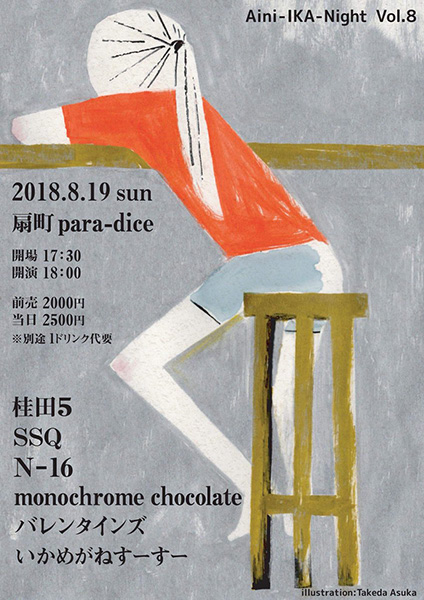
-
『the RocknRoll Hi-Fives Japan Tour 2018』京都公演
出演 : the RocknRoll Hi-Fives, N-16, FIGHT CLUB, キーマカリーズとチチワシネマ
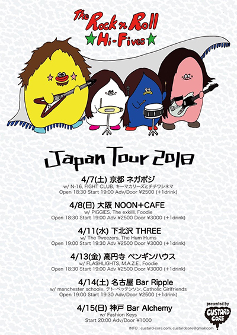
-
exteeeeth企画『beginning of the end.』
opening act : USGKZ & The equipments
出演 : exteeeeth, N-16, バレンタインズ, SK8NIKS, いかめがねすーすー
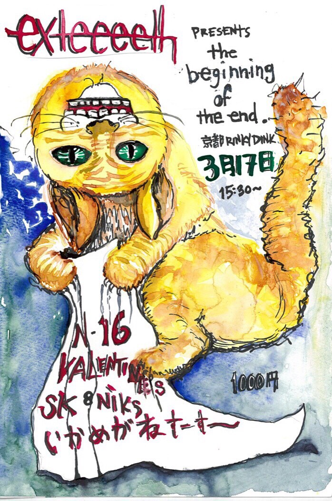
-
『THE WEMMER と行く RUNRUNRUNS レコ発ツアー』大阪公演
出演 : RUNRUNRUNS, THE WEMMER, くつした, N-16, ゆ〜すほすてる, KUNG-FU GIRL
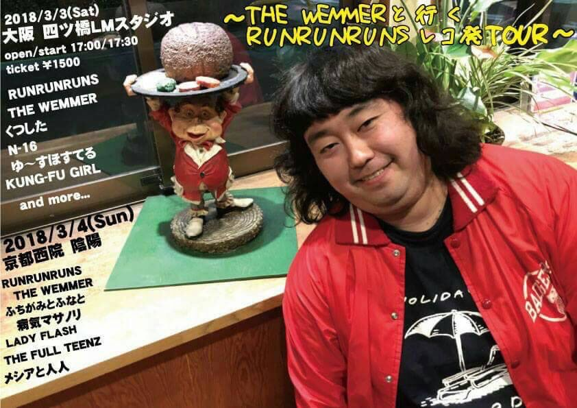
-
『APOML』
出演 : THE NOTHING FACE FROM COLOMBIA, N-16, BLONDnewHALF, 余命百年, ガリザベン, FIGHT CLUB, バイセーシ, 永岡美央(くつした), メシアと人人
-
『Prrrtty Strike』
【Stage】
・ライブ : ni-hao!!!!, N-16, MALIMPLIKI, M.A.Z.E., Monobrow, SWEETY, Thirty Joy, WILD LUNCH
【Lounge】
・ライブ : LIFE IS WATER, ニイマリコ, 内田るん
・DJ : BxBxT, C.V.
・出展 : perzine blues, CUSMOS
・焼き菓子 : ノザワBAKE
・その他 : 占いの館ありこ（ni-hao!!!!）, マメコ（perzine blues）のハンドマッサージ, アヤコ（N-16）の指ヨガ
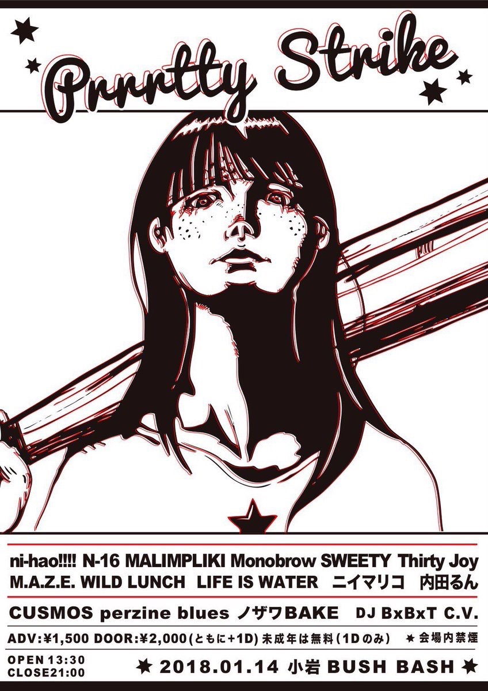
-
『CRAZY RHYTHMS vol.75』
出演 : N-16 (Kyoto), サカイヤスアキ (from moools) & コバルト (Tokyo), Her Braids, TANGINGUGUN
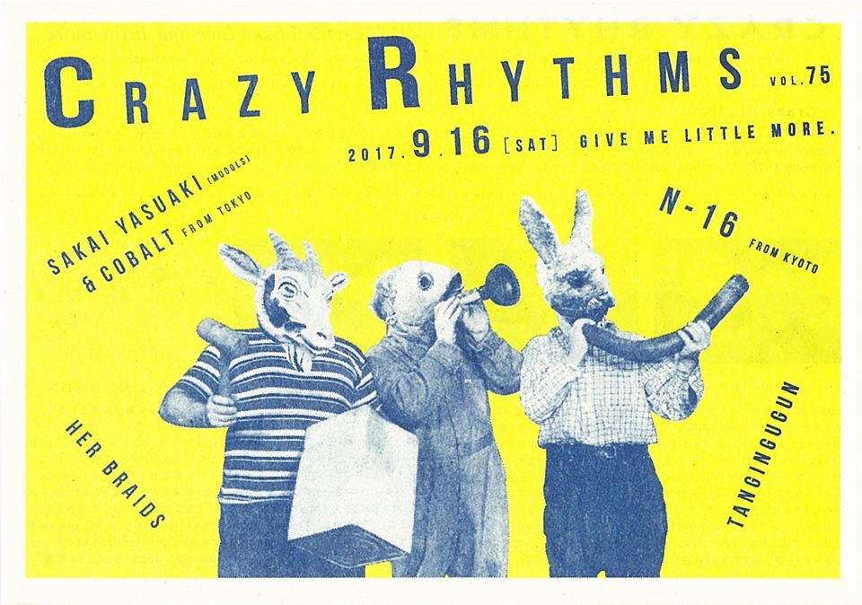
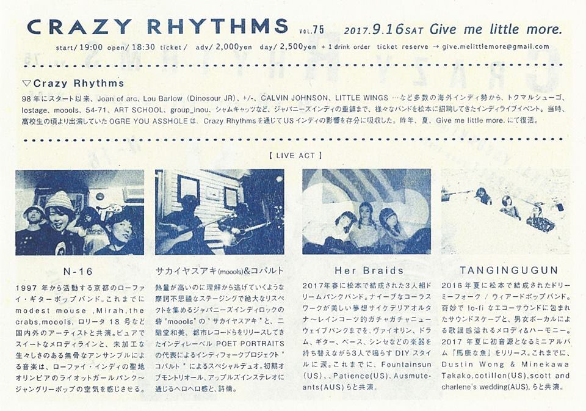
-
LOVE OVER VOLTAGE Presents『DIRECT ACTION DESTROY TRADITION Vol.10』
出演 :
PINKU SAIDO(from France), 5kai, N-16, screwball, キーマカリーズとチチワシネマ
-
さんだるズ presents『🌻SUMMER JOURNEY🍉』
Live : N-16, メシアと人人（from 京都）, マッシュ星川 feat MIRROR LAKES, cats in a bowl,
さんだるズ
DJ : kawahara (listen to your radio), waki, あさひちゃん
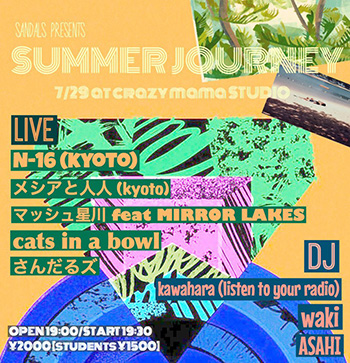
-
『ルックチャップリン』
出演 : N-16, number two, postcard of japan, ジャポニカソングサンバンチ, DIEGO
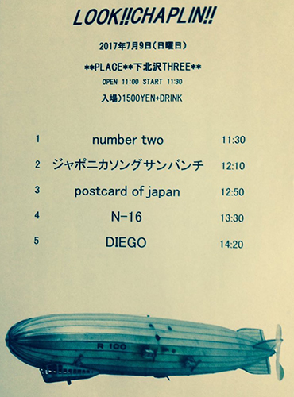
-
『Poet Night #1』
出演 : Cobalt, サカイヤスアキ & 有泉（from moools）, N-16, Foodie
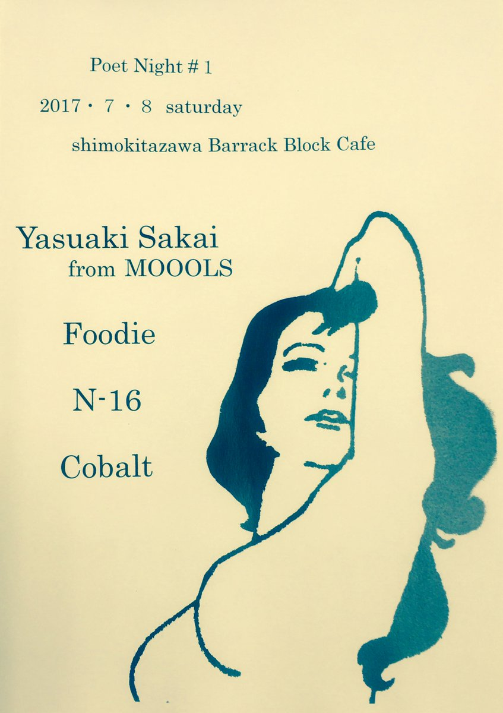
-
『感染ライブ』
出演 : N-16, 徐波(chinese football), she said, fish, quaeru, knit
FOOD : 象の背 ぱるさん
お土産 : まよなかファンクラブ

-
いかめがねすーすー企画『Aini-IKA-Night vol.3』新春大宴会
出演 : LOS OXXO SEXOS, いかめがねすーすー, Diskover, COMPLETED EXPOSITION, ハクバ, Foodie, TakamiSS & TsuyoshiSS, BRONxxx, DO NOT, Neo Japanese, exteeeeth, SOCIAL PORKS, SUPER DUCK, N-16
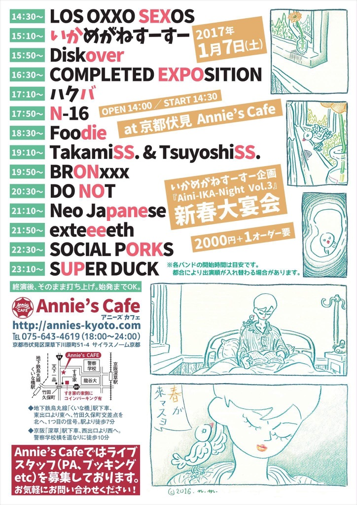
-
『年忘れ地下音楽の会』
出演 : TUMULUS, MOON FACE BOYS, the Miscasts, N-16, buoy, NOISECONCRETE X 3CHI5（名古屋）, jugz（岡山）, 行楽猿（大阪） / DJ : 若松ヨウジン(quaeru) / FOODS : めぐみと叔母
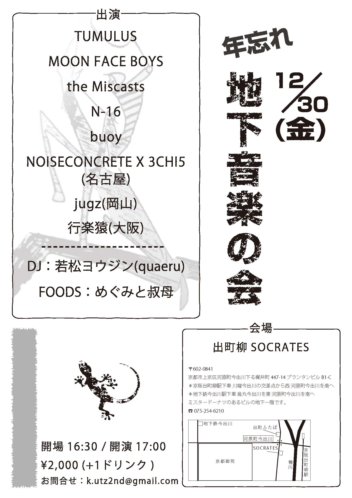
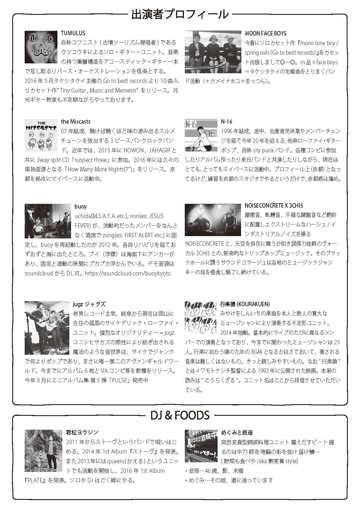
-
Foodie presents『YUM YUM YUM vol.2』
出演 :
Foodie, いかめがねすーすー, exteeeeth, N-16
-
『LA FIESTA FINAL』
出演 :
Saca La Fiesta, Malimpliki,
Deathro, Low Vision, N-16 / DJ：Chiro
屋上party(drinks + vegan food by サパコ etc)
-
『黄金町サイドストーリー vol.6』
出演 : チミドロ, LIFE IS WATER, ClaSSIC4, N-16
-
『CRAZY RHYTHMS vol.72』
出演 : THE LOST CLUB, Gofish, ベアーズマーキン, The End, N-16 / DJ：Hungry Beat! DJs
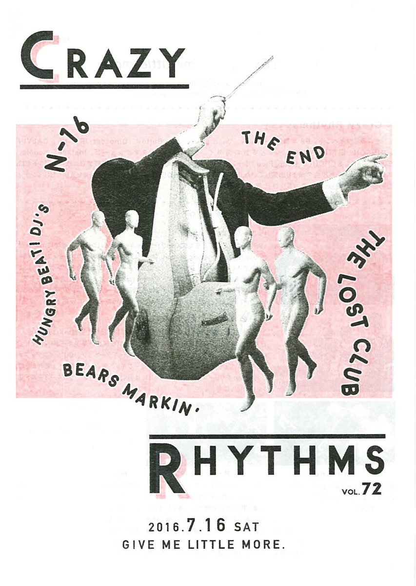
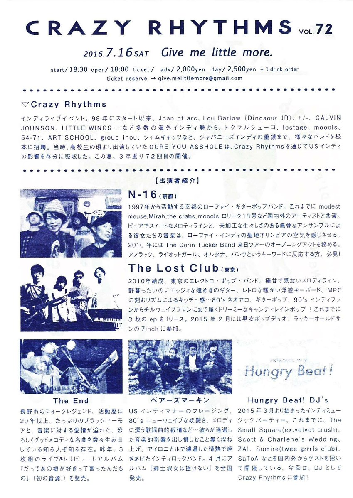
-
【SIS】
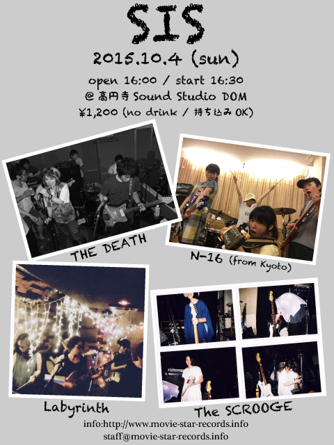
-
2015-10-03 (Sat)｜ 北とぴあ 音楽スタジオ１・２・３（東京都北区王子）
※ N-16 はライブゲスト、及びサポートスタッフとして参加
-
【Girls, Girls, Girls】
出演 : Clues and Codes (USA) / トンチ＋カメイナホコ
※ N-16 はアコースティックセットで出演
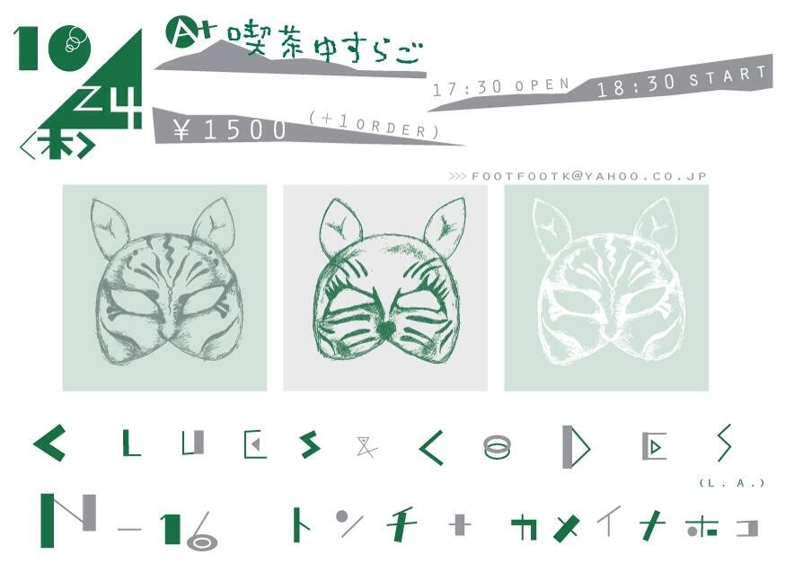
-
2012-04-14｜高円寺 無力無善寺
パスカール企画【パリ、手賀沼、無善寺】
出演 : Alek et Les Japonaises / チミドロ / nezi-maki band / カシミールナポレオン / Opening Act : Count the Hoo-Hoo
-
2011-08-28｜静岡 Freakyshow
【I, my, me, mine vol.12】
出演 : tatami / FLEXEYE / Teenage mind / marikuyura
-
2011-05-14｜安治川倉庫 FLOAT
【DIY OSAKA ZINE FAIR vol.2】
出演 : 泥幻 / Jerry Gordon + Zujaka + Yangjah / a snore
-
2010-12-02｜渋谷 O-WEST
contrarede presents【THE CORIN TUCKER BAND Japan tour 2010】
※オープニングアクトとして出演
-
2010-11-30｜名古屋 HUCK FINN
contrarede presents【THE CORIN TUCKER BAND Japan tour 2010】
※オープニングアクトとして出演
-
2010-11-29｜大阪 sunsui
contrarede presents【THE CORIN TUCKER BAND Japan tour 2010】
※オープニングアクトとして出演
-
2010-11-14｜桜台 pool
【TOKYO ZINESTER GATHERING vol.5】
出演 : 麓健一 / 2UP / HOSE / 豪邸
-
2010-11-11｜高円寺 U.F.O.CLUB
パスカール企画【パリ／手賀沼／杉並 vol.4】
出演 : パスカール / Alek et Les Japonaises / Karel / Farina / 空間破壊
-
2010-09-20｜京都大学 西部講堂
出演 : BOOM BOOM KID (Argentine) / KOLA (横浜) / AIWANA / beerwülf
-
2010-05-04｜京都大学 西部講堂
出演 : VIVARTA / サヨナラブルーバード (松山) / beerwülf / tanimura.com / Noisy Dinner Table Band (ex.the because, カモシカ)